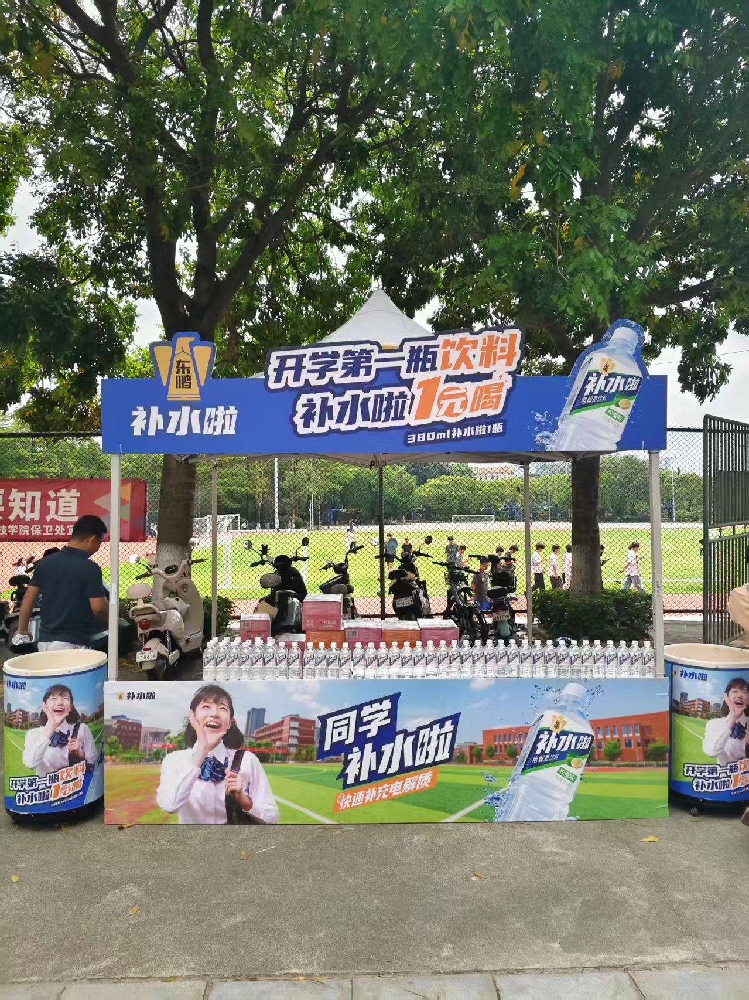
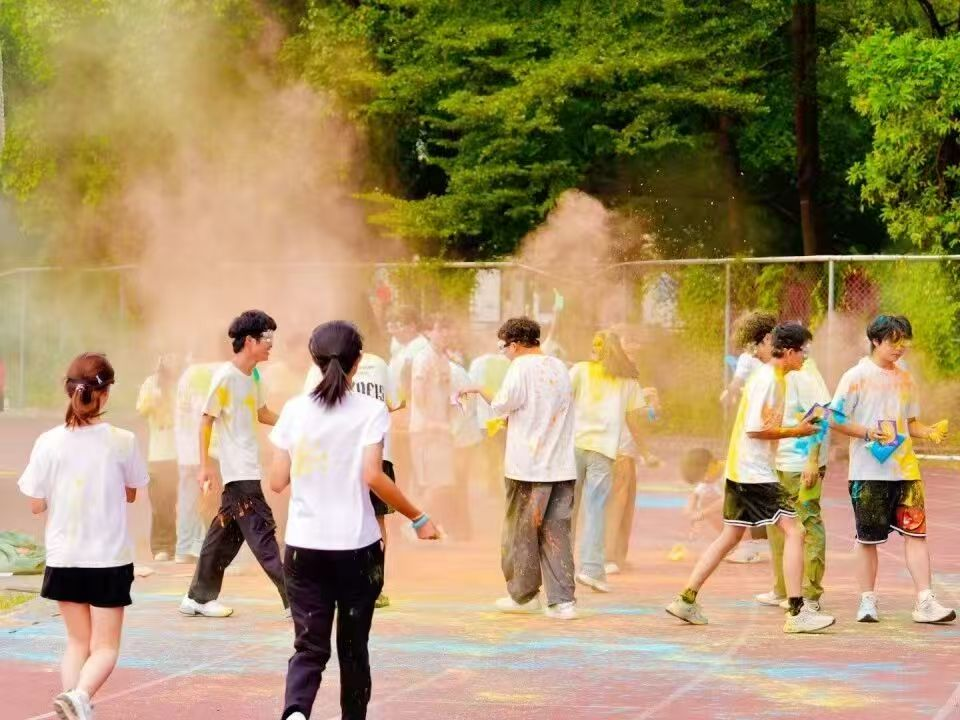
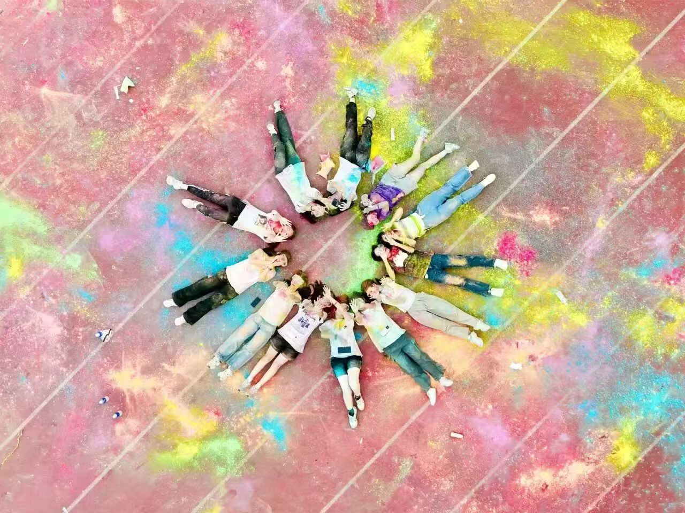
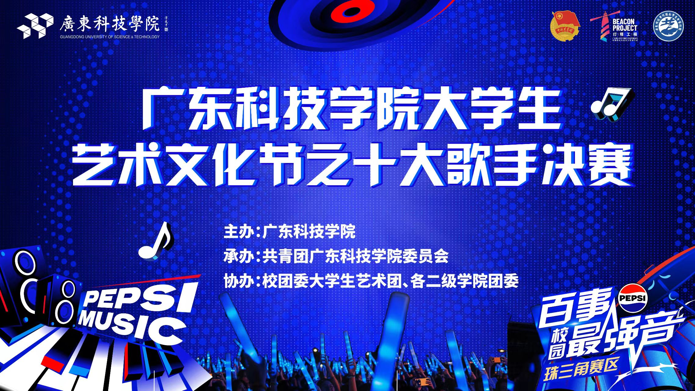
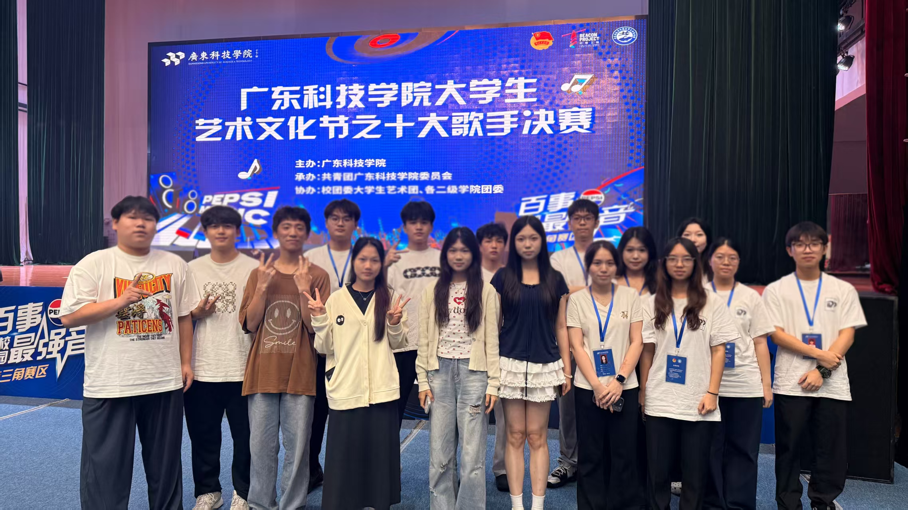

校园活动赞助复盘：品牌方到底愿意为「校园流量」付多少钱
一、背景与角色
我在广东科技学院校学生会公关部担任负责人，核心职责就一件：为学生会大型活动找到钱和资源。任期内累计拉取赞助 10 万+ 元、合作品牌 16+ 家，主持过 10 场大型活动的赞助谈判，并为 15 场活动匹配过品牌地推资源。单场活动赞助规模从 1,000 元到 50,000 元不等，最大一笔是百事可乐冠名的「十大歌手决赛」。
校园赞助的本质是交易：品牌方买的从来不是「支持学生活动」的情怀，而是一个精准触达大学生人群的渠道。想明白这一点，谈判方式就完全不一样了。
沉淀下来的品牌资源池
更重要的是，每谈成一单，联系人、合作偏好、履约习惯都沉淀成了我个人的东莞片区品牌资源库——从方案输出、权益谈判到回报落地，全流程闭环：
覆盖饮料快消、3C 数码、连锁餐饮、电商校园、眼科医疗等品类——头部品牌 + 本地机构两条线并行。
二、真实活动现场
下面是彩虹跑的品牌地推展位实拍——东鹏「补水啦」开学季「1 元喝」展位，从展位落位、物料布置到动线设计都由我们对接落地；后面两张是活动现场氛围（奔跑现场 + 千人方阵航拍），海报和工作组合影是百事可乐冠名的「十大歌手决赛」。这些不是「拉完钱就走了」——品牌方的露出、互动和到场体感，全靠我们部门落地。





点击查看活动当天的官方报道 →
三、我的动作
1. 把「拉赞助」改造成「卖投放方案」
常规做法是拿着赞助手册挨家问「愿不愿意赞助」，我把流程反过来——先研究品牌在校园想什么：
| 品牌类型 | 他们要什么 | 我给的方案 |
|---|---|---|
| 饮料 / 快消（百事等） | 试饮触达、年轻化声量 | 现场摊位 + 活动冠名露出 + 主持人口播 |
| 驾校 / 教培机构 | 精准获客线索 | 报名通道合作 + 传单定向派发 |
| 本地餐饮 | 到店转化 | 优惠券随奖品包发放 + 核销追踪 |
2. 分级赞助包，让预算不同的品牌都有入口
把赞助拆成「冠名 / 联合 / 物资支持」三级，每一级明码标价对应曝光权益（舞台口播、推文露出、现场展位、奖品植入）。有价格锚点的方案，成交速度远快于「面议」——百事可乐冠名那一笔，就是靠这份报价包拿下的。
3. 用数据交付，换下一场的续约
活动结束后给品牌方回传一份简单数据：触达人数、推文阅读量、展位互动量。第一次合作做交付闭环，第二场谈判直接省一半力气。
四、案例深挖：百事可乐「十大歌手」冠名的落地复盘
最大的一笔赞助是怎么落地的？这场与深圳百事可乐的合作，是我依托大型校园赛事做校企品牌联动、兑现商业化赞助权益的完整实践。活动圆满落幕、实现双赢，但对接与执行中暴露的问题，比「谈下来」本身更值得复盘。下面从全流程梳理、核心问题、改进方向三部分展开。
合作概况：权责与权益边界
双方围绕赛事全流程明确分工：我方负责活动全流程组织、校园端宣传执行与现场协调；商家提供核心物资（饮品补给、活动周边）、资金支持及品牌曝光权益，依托校园赛事触达学生群体。赛事品质提升 + 品牌年轻化曝光，双向兑现。
问题一：临时需求频发，沟通成本与协调难度双升
推进中多次出现临期变更：嘉宾桌布颜色调整为蓝色、主持人礼服禁用大红色、舞台下方增设「百事最强音」KV 板——且均在临近活动时提出，我方被迫在商家与校团委之间反复同步。其中 KV 板增设需求，因校团委书记顾虑直播画面品牌统一性初期明确不同意，最终经多轮沟通、在 KV 板中融入学校元素才达成共识。
成因有三：筹备期只聚焦核心赞助权益，没做「全场景需求对齐」（现场细节、视觉规范等隐性需求被漏掉）；没有「需求变更需提前 N 天确认」的前置约束规则；校方直播品牌规范从未同步给商家，商家认知不足就容易提出踩线需求。
问题二：车辆进校流程不顺，时间成本与进度受损
商家配送车与执行人员车辆未按校园通行规定安排，预约入校时间延迟约 1 小时，直接导致物资搬运、现场布置滞后，打乱整体执行节奏。
成因：对校园通行规则的调研不细（时间窗口、通行权限都没精准确认）；未提前向商家同步通行规范；也没有「入校异常应急协调机制」——超时后只能被动等待，没有快速调整执行优先级。
问题三：执行方与学校门岗冲突，额外协调压力增大
执行公司人员与门岗因入校流程、物资搬运问题产生冲突，需要我方介入才化解。不仅分散现场执行精力，也影响双方合作氛围。
成因：前期没对执行公司做校园规范培训（门岗沟通流程、入校注意事项）；没提前搭好「执行方-门岗-我方」三方沟通桥梁；我方对执行公司的现场管控力度不足、无专人全程对接，矛盾没能被及时发现。
改进方案：把教训沉淀成标准动作
- 前置需求全对齐：活动启动前 1–2 周组织校团委、商家、执行方召开「三方需求对接会」，视觉规范、流程节点、权益落地逐一书面确认，执行「无书面确认不执行」原则；需求变更须提前 3 天（重大变更 5 天）书面提出并说明原因；把学校直播品牌规范整理成文档提前同步给商家与执行公司。
- 通行管理精细化：提前对接校团委、后勤处，确认入校时间窗口与车辆权限，形成《校园通行执行手册》；活动前 3 天提交入校申请、前 1 天电话二次确认，预留 1.5 小时缓冲；指定 1 名成员全程负责车辆入校协调。
- 三方协同机制：活动前对执行公司做校园规范培训、发放《校园执行须知》，明确权责边界；建立含校团委、门岗、商家、执行方的「校企执行对接群」，突发问题群内第一时间同步；筹备期安排 2 名成员全程现场管控——1 人对接校园各方、1 人盯执行公司。
- 合作维护与沉淀：活动结束后向百事回传宣传数据（曝光量、参与人数、品牌提及度）与执行情况并致谢；把优化点总结成《校企合作对接手册》，推动校企合作从「单次对接」走向「长效联动」。
这次复盘给我最大的沉淀：赞助工作最贵的成本不是钱，是沟通成本。所有「临时」都是「前置」没做完的欠账——需求对齐、规则约束、通道搭建，三件事前置做，执行期就只剩执行。
五、嘉宾接待：另一条看不见的线
十大歌手决赛的合作方，除了百事还有到访表演嘉宾，对接 VIP 的活同样落到我们公关部肩上。我作为总协调，负责：
- 行程对接：邀请、确认档期、沟通出行偏好
- 住宿 & 交通：酒店预订报销、来回车票 / 接送安排
- 现场动线：彩排彩排走台、候场区、餐饮休息区指引
- VIP 礼仪：接待、引导上台、纪念礼品赠送
赞助和接待，本质是同一件事的 A 面和 B 面：把品牌方/合作方的体验和权益做到位，事情才不会卡在执行层。这套思路进入真实商业环境，就是渠道合作和异业联动的底层动作。
六、结果
| 指标 | 结果 | 说明 |
|---|---|---|
| 累计赞助金额 | 10w+ 元 | 含现金 + 物资等价值 |
| 合作品牌数 | 16+ 家 | 含百事可乐等头部品牌 |
| 主导大型活动赞助 | 10 场 | 覆盖文艺、体育、迎新等 |
| 校园品牌地推 | 15 场 | 饮料 / 教培 / 本地餐饮 |
| 嘉宾接待 | 十大歌手决赛 VIP 全流程 | 行程/住宿/动线/礼仪 4 块全包 |
七、复盘
站在品牌视角做方案而不是伸手要钱；分级报价制造价格锚点，百事冠名是从「报价包」一路谈下来的；活动后主动做数据交付，把一次性交易变成持续合作；把每一单的联系人、偏好、履约习惯沉淀成东莞片区 16+ 品牌的个人资源库；嘉宾接待/赞助落地一套人马做完，对内对外都建立「这事交给我们」的口碑。
过度依赖本地餐饮类小额赞助，头部品牌渗透还可以更深（国际/国内一线品牌占比仍可提升）；赞助权益的履约监督靠人工，出现过露出位置与承诺不符的纠纷风险；品牌资源集中在东莞片区，换城市需要重新建资源库；嘉宾接待没有标准化 SOP，新人接手容易手忙脚乱。
八、方法论沉淀
赞助谈判三步：先研究对方要什么 → 给分级方案带价格锚点 → 用数据交付换复购。再叠一层：把每一类合作方都当成 VIP 来做体验设计（赞助方、嘉宾、媒体一个逻辑）。这套方法放到真实商业环境，就是渠道合作、异业联动、品牌公关的底层动作。下一篇 · 活动执行街道团委活动复盘：政府场景下的活动策划怎么做才不无聊 →